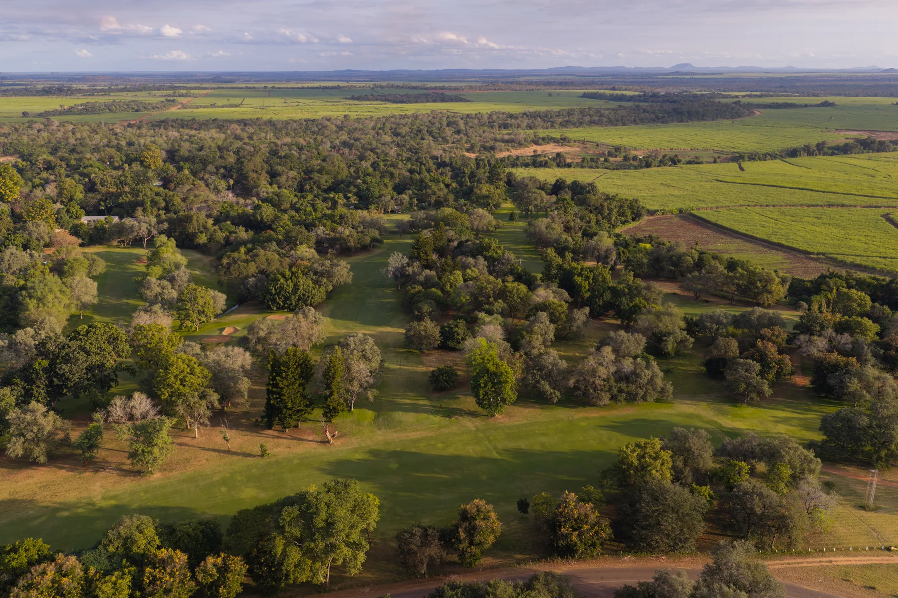

About Us — Our story
Inspired by one man's vision.
Nestled in the heart of Zimbabwe's lush south-eastern Lowveld, Triangle Country Club is a place where history, hospitality, sport and business come together — founded in 1960, and still honouring the pioneering spirit that built it.
The name
Why “Triangle”?
Our story began with the vision of the legendary Scottish pioneer Murray MacDougall, who recognised the immense potential of the untamed Lowveld in the late 1890s. When his first sugar trials left only a handful of surviving cane stalks, they were planted in a triangle — a shape that named the estate, the town and the club at its heart, and which the “TCC” monogram carries forward today.
 The estate grounds
The estate grounds
 Murray MacDougall Museum
Murray MacDougall Museum
Nearby · A step into history
The Murray MacDougall Museum.
A short drive from the club, the museum tells the remarkable story of the pioneer who irrigated the Lowveld and founded Zimbabwe's sugar industry — the determination and engineering that made Triangle possible. A rewarding stop for guests curious about the land they're visiting.
A timeline
From frontier to fairway.
1890s · A pioneer's vision
The Scottish pioneer Murray MacDougall arrives in the untamed south-eastern Lowveld, recognising the immense potential of a land others saw as only dry bush.
1920s–30s · Water through granite
MacDougall's daring irrigation diverts river water along canals hewn from rock — turning the savanna green and founding Zimbabwe's sugar industry.
1930s · Three surviving stalks
As the first sugarcane takes hold, legend holds that three surviving stalks were planted in a triangle — a shape that named the estate, the town and the club.
1960 · The club is born
From that pioneering legacy, Triangle Country Club opens as the social heart of the estate — with golf and sport at its centre.
Today · A base for Gonarezhou
45 chalets, a championship Par 72 course and the Baobab Restaurant welcome business travellers, families, holidaymakers and overlanders bound for the wild.
In pictures
The estate & our people.




Whether you come for golf, a conference, a family holiday or simply a peaceful stop-over on the road to the wild — Triangle offers comfort, recreation and genuine hospitality.